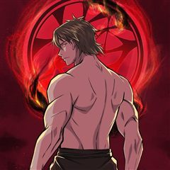
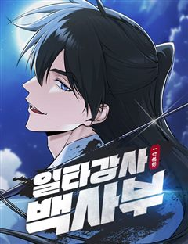

무협 웹툰 추천 TOP 30
강호·천마·무공 이야기를 좋아한다면 이 목록부터 보세요. 네이버웹툰·카카오웹툰·레진코믹스에서 조건에 맞는 작품 207개 중 인기 순으로 30개를 골랐어요. 인기 TOP 3: 화산귀환, 무림세가 천대받는 손녀 딸이 되었다, 쌍갑포차
2026-10-07 기준 · 성인 작품 제외
내 취향으로 더 좁혀서 추천받기 →-
1
 네이버웹툰
네이버웹툰화산귀환
대 화산파 13대 제자.천하삼대검수 매화검존 청명. 천하를 혼란에 빠뜨린 고금제일마 천마의 목을 치고 십만대산의 정상에서 영면. 백 년의 시간을 뛰어넘어 아이의 몸으로 다시 살아나다. ......뭐? 화산이 망해? 이게 뭔 개소리야!?
무협명작개그세계관동양풍판타지네이버웹툰에서 보기 → -
2
 카카오웹툰
카카오웹툰무림세가 천대받는 손녀 딸이 되었다
무협지 속 세상으로 빙의한 주인공. 남주인공을 영웅의 길로 이끄는 참스승이자 완전체, 백리의강의 어리석은 민폐딸 백리연으로 빙의한다. 뜻밖의 죽임을 당하고, 눈을 떠보니 모든 것을 되돌릴 수 있는 아이 때로 회귀하는데. "나, 이번엔 사랑받을 수 있는 거야?" 이번 생에서는 민페딸이…
무협사이다로판육아물카카오웹툰에서 보기 → -
3
 카카오웹툰
카카오웹툰쌍갑포차
예상치 못한 시간, 예상치 못한 장소에 나타나는 쌍갑포차! 쌍갑포차를 운영하는 월주는 과연 누구일까? 쌍갑포차에 찾아오는 다양한 손님들의 감동적인 이야기! 한국 전통 신화 이승과 저승을, 꿈의 세계 그승과 함께 재창조한 세계관으로, 덤덤하게 써 내려진 깊이 있는 사람들의 사연 속 조선…
무협공감눈물샘자극옴니버스카카오웹툰에서 보기 → -
4

카카오웹툰대사형 선유
삼류 낭인 곽노의 손에 거둬진 아이들. 사제관계를 맺고 아이들은 어설프게나마 무공과 보법 수련을 하며 각자의 꿈을 꾼다. 먹고살기 위해 곽노는 늘 자리를 비워야 했고, 아이들 중 맏이인 선유는 사제들을 돌봐야 한다. 그는 대사형大師兄이다.
무협눈물샘자극액션가족카카오웹툰에서 보기 → -
5
 카카오웹툰
카카오웹툰군림천하
"너만은 꼭 군림천하 해야 한다!” 그 한마디로 진산월의 운명이 결정됐다. 스물세 살, 그는 종남파의 장문인이 되었다. 남은 이들은 단 8명의 제자뿐. 한때 천하제일을 꿈꿨지만, 지금은 명맥만을 잇는 문파. 사부의 유지를 위해, 살아남기 위해— 진산월은 비정한 강호로 나아간다.
무협자극적인성장물액션카카오웹툰에서 보기 → -
6
 네이버웹툰
네이버웹툰나노마신
갖은 멸시와 목숨의 위협을 받던 마교의 사생아 천여운, 미래에서 나타난 후손이 천여운의 몸에 나노 머신을 주입한 후 그의 인생이 송두리째 바뀐다. 마교를 넘어 무림 최고의 자리에 오르기 위한 천여운의 거침없는 이야기가 시작된다!
무협레드아이스 스튜디오사이다천마게임네이버웹툰에서 보기 → -
7
 카카오웹툰
카카오웹툰비뢰도
홀로 길러주신 아버지를 잃고 10세에 혈혈단신이 된 비류연. 조각가였던 아버지에게 배운 기술로 부모님의 조각상을 만들어 두 분 묘 앞에 세워뒀더니, 지나가던 노인이 그걸 보고는 천하제일 무공을 가르쳐주겠다고 한다. 수상쩍지만 달리 갈 곳도 없고, 그럴듯해 보인 무공에 혹해 비류연은 그…
무협개그사이다액션캠퍼스카카오웹툰에서 보기 → -
8
 카카오웹툰
카카오웹툰무당기협
무림 사파의 수장인 혁련무강은 죽기 직전 불로초를 삼킨 후 눈을 떠보니 무당파 도동의 몸에 빙의되었다. 예전에 본인이 붕괴 직전까지 몰고 갔던 무당파에서 '진무'라는 이름의 도사로 다시 살게 된 그는 무당의 '양의신공'을 전수받기 위해 애쓰다 보니 뜻하지 않게 무당이 부흥하는데...!
무협사이다액션빙의카카오웹툰에서 보기 → -
9
 네이버웹툰
네이버웹툰광마회귀
무공에 미친 광마 이자하. 그는 마교 교주의 천옥을 훔쳐 쫓기던 중 벼랑에서 떨어지게 된다. 모든 게 끝났다고 생각한 순간 눈을 떠보니, 사람들에게 무시당하던 점소이 시절로 돌아와 있는데... 게다가 억울한 누명으로 두들겨 맞고 객잔은 박살이 나 있는 상황. 점소이 시절로 회귀한 광…
무협사이다세계관회귀판무네이버웹툰에서 보기 → -
10

-
11
 카카오웹툰
카카오웹툰로그인 무림
세상의 경계인 게이트에서 몬스터 사냥을 하는 헌터들이 잘 먹고 잘 사는 시대. 주인공 진태경은 최하위 헌터라 벌이가 시원찮다. 어느 날, 낡은 VR 게임기를 줍게 되고 접속하니 무림의 세계가 펼쳐진다. 우여곡절 끝에 현실로 돌아온 태경은 무림에서 얻었던 힘이 현실에서도 그대로 남아있음…
무협개그서스펜스액션게임판타지카카오웹툰에서 보기 → -
12
 네이버웹툰
네이버웹툰괴력 난신
살인에서 삶의 즐거움을 느끼는 '겸살귀', 정(正). 대 연목검장의 셋째공자 목경운과 똑같이 생긴 얼굴을 가졌는데... "나의 대역이 되어라. 그러면 옥에서 나갈 수 있게 해 주마." "그 기회. 제게 주시겠습니까?" '촤악-!!!' 셋째공자를 죽여버린다. 그리고 본인이 '진짜'가 되…
무협레드아이스 스튜디오천마액션세계관네이버웹툰에서 보기 → -
13
 카카오웹툰
카카오웹툰묵향 다크레이디
마교의 교주로서 극강의 무공을 자랑하던 묵향은 적들(혈교)에 의해 생전 처음 보는 생소한 이세계(판타지 세계)로 떨어지게 된다. 그곳에서 엘프, 마법사, 기사, 드래곤 등 새로운 존재들과 만나며... 무림 최고수 묵향이 원래 자신의 세상(무림)으로 돌아가기 위해 긴 모험을 떠나게 된다…
무협사이다학원물카카오웹툰에서 보기 → -
14
 카카오웹툰
카카오웹툰무장 - 무투전
고려를 지키는 무신이라 불리는 권. 그의 어린 시절부터 이야기는 시작된다. 주인공 권과 그의 형 정은 고려에서 가장 강했던 무인이자 노비였던 만적의 아들들이다. 아버지 만적이 노비 해방 운동을 일으키지만 실패로 끝나고 죽음을 맞자 정과 권은 누군가로부터 계속해서 목숨을 위협받는다. 살…
무협자극적인액션복수극카카오웹툰에서 보기 → -
15
 네이버웹툰
네이버웹툰절대회귀
"나를 과거로 보내주시오." 이 시대에서 그를 죽일 수 없다면, 과거로 돌아가면 되리라. 시간을 거스를 수 있는 '회귀대법(回歸大法)'으로 그토록 원하던 과거로 회귀한 한 남자. 가족도, 친구도, 삶도, 모두 잃었던 '검무극(劍無極)'의 복수를 위한 첫걸음이 시작된다.
무협참교육미친작화무협/사극고인물네이버웹툰에서 보기 → -
16
 카카오웹툰
카카오웹툰비에 젖은 흔적들이다
그날 내가 잃어버린 것은 너일까, 나일까. 그리고 내가 다시 찾은 것은 나일까, 너일까. 아니면 우리일까. 14년 전 그날 홀로 남겨진 동경은 갈 길을 잃은 채 그 자리에 멈춰버렸다. 차가운 세상에 대한 믿음도 유대도 기대도 없다. 절망도 없다. 나조차도 없다. 껍데기만 어른이 되어버…
무협설렘폭발시대물카카오웹툰에서 보기 → -
17
 카카오웹툰
카카오웹툰푸른 눈의 책사
적법한 왕의 핏줄을 타고난 두 형제는 가짜 왕을 몰아내고 군위에 오를 것을 결심한다. 갈대밭에 숨어 옆 나라로 건너가 조력자들을 만나려는 그들에게 장사치는 푸른 눈의 책사에 대한 경고를 한다.
무협시대물카카오웹툰에서 보기 → -
18
 카카오웹툰
카카오웹툰천재 궁수의 스트리밍
선수권 대회 최연소 우승자. 그러나 비운의 사고로 몰락한 천재 양궁 선수 유상현! 먹고살기 위해 게임 스트리머, 아몬드가 되는데…. [활을 선택하셨습니다.] 피융! 푸욱! "…보스 원래 한 방이에요?" [엄마! 나는 커서 아몬드가 될래요!] [이게 조선의 활이다ㅋㅋㅋㅋ] 미친 재능이…
무협서스펜스학원물카카오웹툰에서 보기 → -
19
 네이버웹툰
네이버웹툰절대군림
"이 강호, 제가 먹습니다!" 왼손에는 군자검을, 오른손에는 지옥도를 든 미스터리한 과일상 아들. 입담과 재주는 물론, 압도적인 무공 실력까지 갖춘 완벽한 그의 진짜 정체는 무엇일까. '강호제패'를 품은 스무 살 청년, '적이건(赤利乾)'의 유쾌한 여정이 시작된다!
무협천마정통무협동양배틀네이버웹툰에서 보기 → -
20
 네이버웹툰
네이버웹툰마도전생기
정파무림 의천맹의 최강 살수, 천하진. 자유를 찾기 위해 탈출을 감행하지만 코앞에서 목숨을 잃고 만다. 그런데… '신교불패, 만마앙복. 삼공자님의 쾌유를 경하드리옵니다!' 무림의 공적, 마교의 삼공자로 전생해버렸다?! 정파무림 최강 비밀병기 천하진의 마도무림 정복기.
무협전쟁악역이주인공액션지금추천작네이버웹툰에서 보기 → -
21
 네이버웹툰
네이버웹툰천마육성
마교의 태왕각주 ‘사마귀’의 명령으로 화산파 출몰 지역으로 파견나간 비객조. ‘설휘’는 화산파의 절대고수 ‘구종명’에게 죽임을 당할 위기에 처한다. 그때 눈 앞에 상태창이 나타나고 정찰 임무를 받기 직전으로 회귀하게 된다. 설휘는 자신이 전생에서 죽임을 당했던 똑같은 임무를 받게 되자…
무협자극적인시리어스동양게임네이버웹툰에서 보기 → -
22
 카카오웹툰
카카오웹툰블랙기업조선
밀리터리, 스팀펑크 등등 온갖 덕질에 미친 잡덕후가 환생했다. 그런데 아버지가 세종대왕? 덕질에 능한 군주와 덕질에 미친 아들, 그리고 갈려 나가는 대신들과 수많은 인간들. 오늘도 조선의 밤은 야근의 불빛이 가득하다.
무협사이다정치카카오웹툰에서 보기 → -
23
 카카오웹툰
카카오웹툰의원, 다시 살다
해외 의료 봉사를 갔다가 내전에 휘말렸다. 환자 대신 반군의 총을 맞고 간신히 눈을 떴는데 아니, 어린아이가 됐잖아?!? 눈앞에 있는 건 부서진 마차와 특이한 복식의 쓰러진 사람들! "꼭 무림 세계 같네." 한 명이라도 살리기 위해 응급처치를 하던 중, 이곳이 즐겨 읽던 무협 소설,…
무협힐링액션빙의카카오웹툰에서 보기 → -
24
 네이버웹툰
네이버웹툰장씨세가 호위무사
‘당신이 부른 것이오. 나란 사람을... ’ 은둔고수 광휘. 호위무사 되다. 웹소설 원작 웰메이드 무협 시대극!
무협사이다무협/사극힘숨찐판무네이버웹툰에서 보기 → -
25
 네이버웹툰
네이버웹툰절대검감
단전이 부숴졌다는 이유로 집에서는 내놓은 자식 취급을 받던 소운휘는 혈교에 납치되어서도 삼류 첩자로 살아왔다. 어느 날, 전설로만 알려진 검선비록을 찾는데 이용당하다 죽은 운휘는 10년 전, 혈교에 납치되던 그 날로 돌아가게 되고 검의 목소리를 듣는 신비한 능력을 얻는다.
무협동양이능력모험액션네이버웹툰에서 보기 → -
26

네이버웹툰일타강사 백사부
혈교 최고의 무공 교관, 시골 무관의 사부로 환생하다. 그리고 정파 무림의 일타강사로! 이름하여 백 사부. 그가 이제 전 무림을 참교육한다!
무협소설원작네이버웹툰에서 보기 → -
27
 카카오웹툰
카카오웹툰말단 후궁의 딸로 태어났습니다
눈 떠보니 옹주였다. 교통사고를 당하고 눈을 떠보니 사극 같은 세계 속의 아기 옹주가 되어 있던 시아. 다행히 왕실에서 태어나 먹고살 걱정은 없겠다고 생각했던 것도 잠시, 비어있는 중전 자리를 차지하기 위한 궁중암투가 시아를 덮쳐온다! “빼애애앵!! (나를 엄마와 함께 조용히 살게 내…
무협사이다환생카카오웹툰에서 보기 → -
28
 네이버웹툰
네이버웹툰무사만리행
[ 2025 오늘의 우리만화 수상작 ] 2세기 후반, 마한연맹 고리국(古離國)의 무사 나루. 믿었던 스승의 배신으로 나라가 멸망하고, 평생을 바쳐 지켜주겠노라 맹세했던 소단공주의 행방이 묘연해진다. 소단 공주의 행방을 쫓던 나루는 서역으로 떠났다는 배신자의 말에 로마제국의 검투 노예로…
무협명작성장물퓨전사극판무네이버웹툰에서 보기 → -
29
 카카오웹툰
카카오웹툰학사검전
장원에 급제하여 입궁한 학사 운현. 황태자의 취미생활을 전담하는 초라하고 처량한 신세를 한탄하지만, 그럼에도 포기하지 않고 최선을 다해 무공을 익힌다. 그러던 운현은 갑자기 무림을 제패하기 위해 붓을 드는데?! 젊은 나이에 장원에 급제한 학사의 숨겨진 이야기가 시작된다.
무협미스터리액션직업드라마카카오웹툰에서 보기 → -
30
 카카오웹툰
카카오웹툰수라전설 독룡
유구한 역사를 자랑하는 약문(藥門)들의 잇따른 멸문지화. 시체가 산처럼 쌓이고 피가 바다처럼 흐르는 절망의 지옥에서 마침내 수라(修羅)가 눈을 뜬다. 하나도 남김없이 모두 죽일 것이다. 놈들을 전부 죽일 때까지 절대로 끝내지 않아. 약문 백화절곡의 유일한 생존자 진자강. 먼 훗날 강호…
무협자극적인액션복수극카카오웹툰에서 보기 →